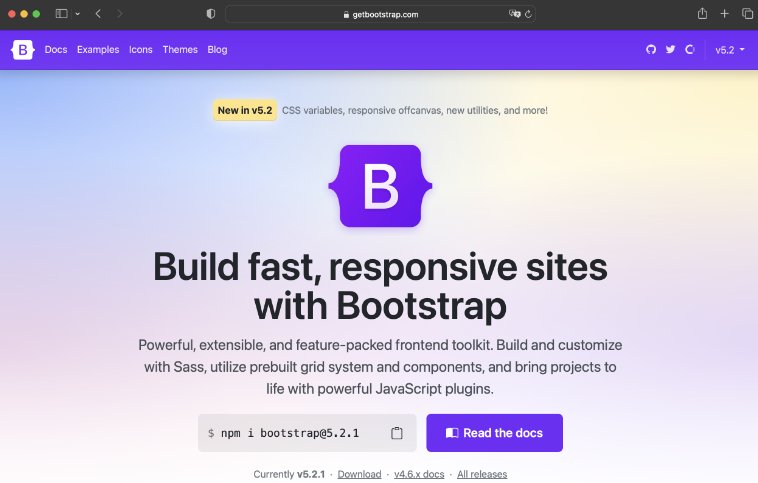
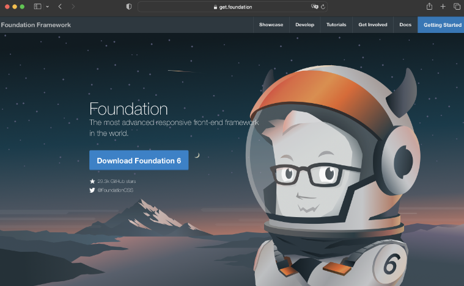
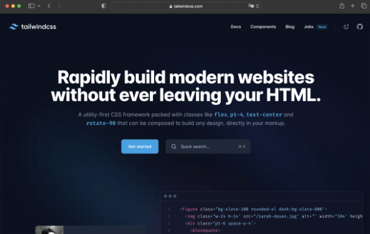
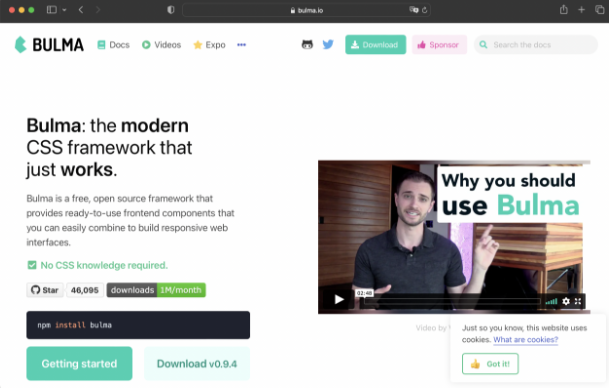
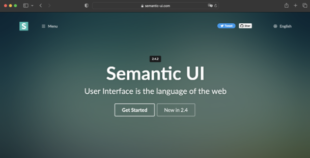

HTML adaptativo.
Erick Daniel Galaviz Saenz
Mat.238545
Bitacora 3: Frameworks

Bootstrap
Bootstrap es uno de los frameworks más populares de CSS debido a su diseño responsivo. Fue
desarrollado por Twitter y lanzando al público en el 2011. Dentro de su núcleo incluye HTML,
SASS y JavaScript para dotarlo de funcionalidades y componentes bastante interesantes.

Foundation
Este un framework pensando para cualquier dispositivo pensando en la accesibilidad.
Foundation es en realidad una familia de frameworks que busca facilitar el diseño de sitios
web, aplicaciones y correos electrónicos responsivos. Es semántico, legible, flexible y
completamente personalizable.

Tailwind CSS
Tailwind CSS es una nueva forma de trabajar dentro de los frameworks de CSS. Funciona
escaneando todos los archivos HTML, componentes de JavaScript y cualquier otra plantilla en
busca de clases y de este modo genera los estilos correspondientes y escribe el resultado de
esa búsqueda en un archivo CSS estático.

Bulma
Bulma es un framework completamente gratuito y de código abierto con una librería de
componentes listos para ser usados al construir interfaces responsivas.

Semantic UI
Semantic UI tiene un concepto diferente al resto: construye un vocabulario compartido al
rededor de la interfaz de usuario. Se basa en los principios del lenguaje natural y ofrece a
quien desarrolle con este framework más flexibilidad al facilitar la lectura y comprensión
del código.